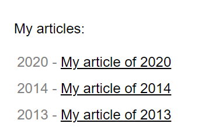

Display the value of an HTML attribute in custom list bullets with CSS
Instead of simple dots, I wanted the list bullets of the index page of my blog to be the date at which articles were written. It turns out HTML+CSS can do that easily.
Here is how I created a list with custom bullets, taking their value from an HTML attribute.
The HTML markup of my index page, note the year="2020" attribute on the <li> element:
<ol class="pages">
<li year="2020">
<a href="/my-article/">My article of 2020</a>
</li>
</ol>
And the CSS magic. we customize the bullet with ::marker and read the HTML attribute witg attr().
.pages {
padding-inline-start: 6ch;
}
.pages li::marker {
content: attr(year) " - ";
}
Here is how it displays:
You can achieve a lot with just HTML+CSS, the stack powering this blog and my other web pages.